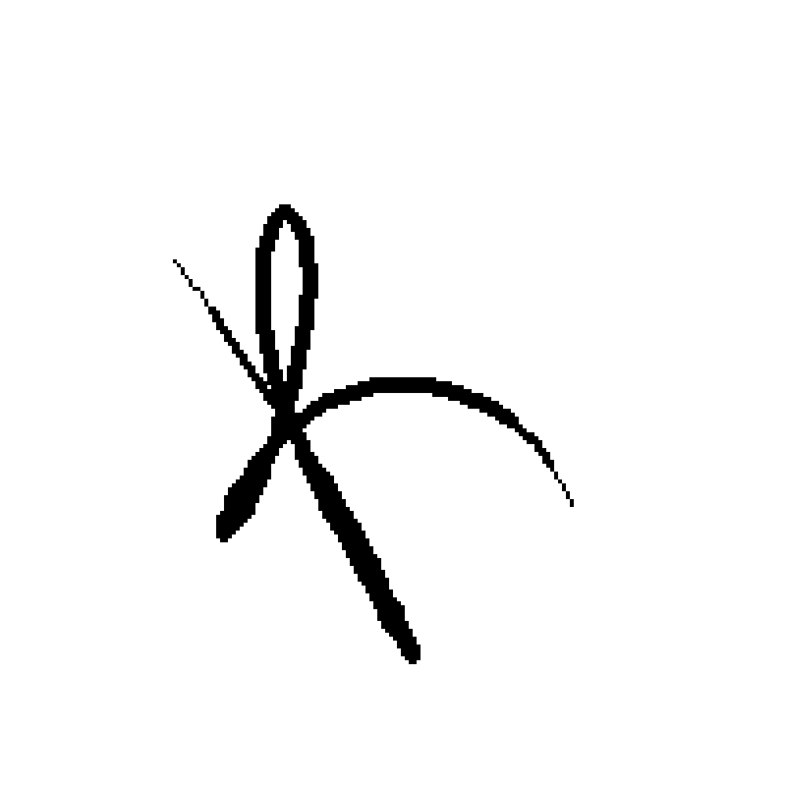

GATE
KEEPER
بازی معمای مدار منطقی: گیتها را وصل کن، سیمها را بکش و ماشین را بیدار کن.
بازی معمای مدار منطقی: گیتها را وصل کن، سیمها را بکش و ماشین را بیدار کن.
مرحلهی ۱: اولین گیت AND

LEVEL 01
مدار خاموش است
هر دو کلید را بزن تا LED روشن شود.
GALLERYروی هر عکس بایست تا مدار روشن شود